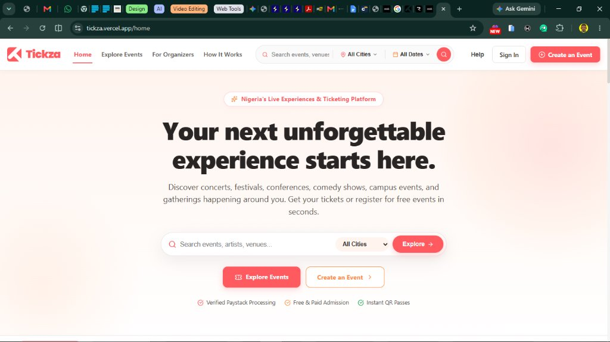

Project Overview
Tickza is a commercial event ticketing and physical admission management ecosystem tailored specifically for Nigerian event organizers, concert promoters, conferences, and tertiary campus festivals. Built with a mobile-first philosophy, the system connects event creators, ticket buyers, door stewards, and administrators into a cohesive, transactionally secure environment.
Unlike generic international ticketing platforms that impose prohibitive currency conversion friction or fragile third-party integrations, Tickza operates natively in Nigerian Naira (₦ NGN) through Paystack. It supports custom tier configurations (General Admission, VIP, Table of 5, Table of 10), dynamic inventory locks, automated electronic ticket delivery, and lightning-fast QR code gate validation capable of scanning tickets in under 500 milliseconds.

The Real-World Problem
Nigerian live events face acute operational challenges rooted in payment friction, ticketing fraud, and disorganized gate admission queues:
✕ The Operational Bottlenecks
- Ticket Duplication & Screenshots: Buyers sharing PDF tickets across WhatsApp groups, leading to unauthorized duplicate entries at event gates.
- Gate Congestion & Network Failure: Unreliable cellular data at packed venues crashes online validation scanners, freezing entrance queues.
- Manual Bank Transfer Chaos: Organizers spending hours matching bank alerts against attendee names, resulting in missed payments or fake alert fraud.
- Opaque Revenue & Settlement Disputes: Difficulties tracking split commissions, ticket refunds, and virtual payouts between organizers and platform admins.
✓ The Engineering Objectives
- Cryptographic HMAC Tokenization: Opaque QR payloads signed with SHA-256 HMAC ensuring tickets cannot be spoofed or replayed.
- Sub-Second Admission Engine: Optimized check-in API with atomic database updates (
$set: { checkedIn: true }) preventing double entry. - Native Paystack Automation: Webhook-driven payment reconciliation verifying transaction references before generating ticket assets.
- Virtual Ledger & Escrow: Platform commission deduction model maintaining clear double-entry account ledgers prior to automated payout requests.
The Digital Solution Developed
I architected Tickza as an enterprise-grade multi-portal application composed of an ES Module Node.js/Express backend communicating with MongoDB Atlas, and a responsive React 19 / Vite client.
The platform orchestrates the complete ticket lifecycle across four integrated touchpoints:
Buyer Discovery & Checkout
Mobile-optimized responsive catalog, real-time ticket tier selectors, dynamic fee calculation, and direct Paystack modal integration.
Organizer Control Center
Event creation studio, multi-tier pricing, live sales charts, attendee roster exports, ticket inventory caps, and wallet payout requests.
Gatekeeper Scanner PWA
Camera-based QR scanner modal with tactile vibration and audio feedback, attendee name verification, and immediate duplicate detection.
Platform Super-Admin
Platform-wide revenue telemetries, dispute arbitration, Paystack external refund execution, organizer commission parameters, and audit logging.
Core Implemented Features
- Multi-Category Ticket Hierarchies: Support for distinct ticket types per event—General Admission, VIP, Table of 5, Table of 10, and Backstage Access—each with individual price points, quota locks, and perks descriptions.
- Paystack Payment Webhook Handling: Production-grade webhook listener verifying Paystack cryptographic signatures (
x-paystack-signature), handling both payment success and automated external refund events. - Encrypted QR Code Pass Generation: High-density QR code creation containing signed JSON tokens with ticket ID, event ID, buyer metadata, and verification nonce.
- Anti-Double-Check-In Concurrency Locks: Atomic database operations enforce single-admittance guarantees even if the same QR code is presented to multiple gatekeepers simultaneously.
- Verified Secondary Resale Marketplace: Controlled peer-to-peer ticket resale mechanism with price caps to eliminate black-market scalping while guaranteeing ticket authenticity.
- Organizer Financial Ledger: Virtual wallet accumulating net earnings post-commission, with bank account resolution and automated Paystack Transfer dispatch.
System Architecture & Data Design
The architecture follows strict separation of concerns, defensive validation, and modular service encapsulation:
paystackService.js (transaction initialization, webhook verification, external refund execution), qrService.js (dynamic salt HMAC tokenization), emailService.js (Nodemailer receipt dispatch).User, Event, Ticket, Order, ResaleListing, PayoutRequest. Compound indices on { event: 1, ticketCode: 1 }.My Technical Contributions
- Backend Architecture: Designed the complete RESTful routing layer across
auth,events,orders,tickets,checkin,admin, andpayouts. - Payment Integration: Engineered full Paystack lifecycle handling—from transaction initialize and checkout modal launch to webhook verification, double-entry payment reconciliation, and external Paystack Refund API invocation.
- QR Cryptographic Security: Authored the ticket tokenization and validation pipeline utilizing dynamic cryptographic salts to prevent replay attacks and forgery.
- Mobile Gate Scanner: Built the camera-integrated check-in PWA view with haptic vibration, auditory chimes, and instant attendee verification state transitions.
- Frontend Engineering: Developed the responsive React application with custom modal management, live search, attendee roster filtering, and organizer analytics dashboards.
- Comprehensive Test Automation: Authored and maintained 206 automated integration and unit test assertions validating every critical financial, cryptographic, and access-control pathway.
Technology Stack
Engineering Decisions & Bug Discoveries
During the independent second-pass audit, I identified that previous implementations marked orders as REFUNDED in the database and deducted vendor balances without calling Paystack's external endpoint (POST https://api.paystack.co/refund). This would have left buyers without their cash refund. I fully engineered the external call, added webhook event listeners for refund.processed and refund.failed, and stored Paystack refund references directly in the order schema.
In server/services/qrService.js, static variable evaluation caused process.env.QR_SECRET to be evaluated before dotenv.config() executed in automated tests. This caused silent fallback to an unconfigured salt and random token verification failures. I refactored the module to dynamically evaluate the secret via a getter method (getQrSecret()), restoring 100% cryptographic token verification.
I chose an Escrow & Virtual Ledger Marketplace Model over Paystack inline Subaccounts. This design ensures that platform commissions are guaranteed, attendee refund liabilities can be managed safely before funds leave the ecosystem, and event organizers receive unified payouts upon event completion rather than fragmented, un-reconciled micro-transfers.
Second-Pass Verification & Test Suite
Tickza underwent an exhaustive, automated second-pass production audit covering 206 distinct test assertions across 6 dedicated test runners with a 100% pass rate:
- Suite 1: Authentication & RBAC: JWT lifecycle, bcrypt password hashing, expired token rejection, role-based admin/organizer guards.
- Suite 2: Event Publishing & Tier Quotas: Multi-tier allocation, date validation, inventory exhaustion guards.
- Suite 3: Paystack Checkout & Webhook Lifecycle: Signature verification, idempotent order creation, external refund execution.
- Suite 4: Cryptographic HMAC QR Validation: Tampered payload rejection, expired pass rejection, dynamic salt evaluation.
- Suite 5: Gatekeeper Concurrency & Check-In: Atomic double-entry blocking, offline sync recovery, attendee check-in timestamping.
- Suite 6: Secondary Resale & Payout Escrow: Resale price ceiling enforcement, ledger balance calculations, bank account verification.
Impact & Deliverables
Tickza represents a production-grade commercial software product capable of handling high-volume live event ticketing. By replacing fragmented manual bank transfers and insecure PDF screenshots with a unified, Paystack-backed digital commerce workflow, the platform delivers zero-fraud admission, instantaneous organizer settlements, and a frictionless experience for event attendees across Nigeria.